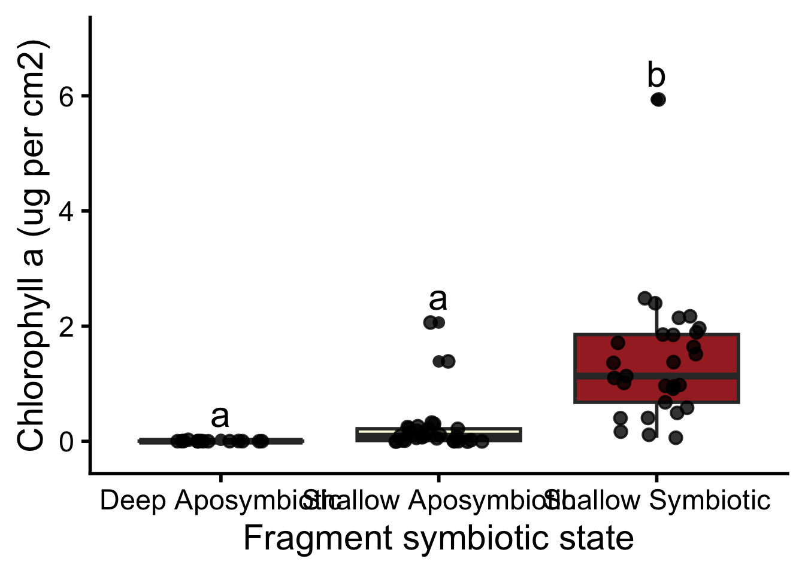
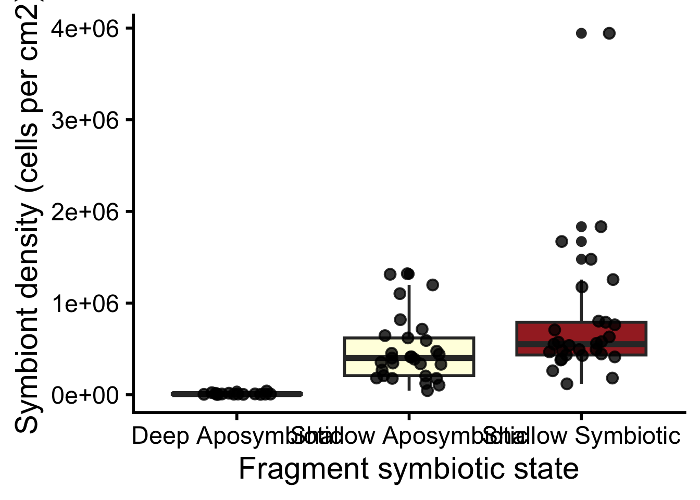
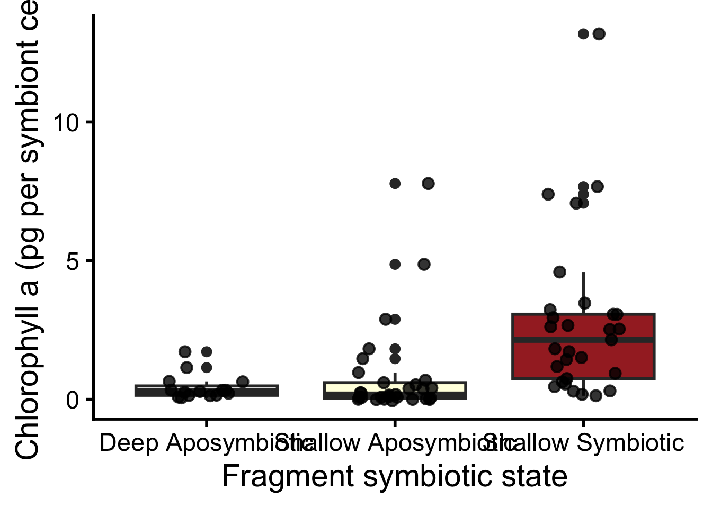

── Attaching core tidyverse packages ──────────────────────── tidyverse 2.0.0 ──
✔ dplyr 1.1.4 ✔ readr 2.1.5
✔ forcats 1.0.1 ✔ stringr 1.5.2
✔ ggplot2 4.0.0 ✔ tibble 3.3.0
✔ lubridate 1.9.4 ✔ tidyr 1.3.1
✔ purrr 1.1.0
── Conflicts ────────────────────────────────────────── tidyverse_conflicts() ──
✖ dplyr::filter() masks stats::filter()
✖ dplyr::lag() masks stats::lag()
ℹ Use the conflicted package (<http://conflicted.r-lib.org/>) to force all conflicts to become errors
library(readr)library(here)
here() starts at /Users/mayapowell/Documents/Castillo_Lab/oculina_seasonal/oculina_seasonal
library(ggplot2)library(ggpubr)library(car)
Loading required package: carData
Attaching package: 'car'
The following object is masked from 'package:dplyr':
recode
The following object is masked from 'package:purrr':
some
library(rstatix)
Attaching package: 'rstatix'
The following object is masked from 'package:stats':
filter
library(emmeans)
Welcome to emmeans.
Caution: You lose important information if you filter this package's results.
See '? untidy'
Rows: 83 Columns: 12
── Column specification ────────────────────────────────────────────────────────
Delimiter: ","
chr (11): date, timepoint, group, tag_color, tag_no, id, id_time, frag_sym, ...
dbl (1): depth_ft
ℹ Use `spec()` to retrieve the full column specification for this data.
ℹ Specify the column types or set `show_col_types = FALSE` to quiet this message.
This is the data that Ty initially shared with me in July 2025
Rows: 82 Columns: 18834
── Column specification ────────────────────────────────────────────────────────
Delimiter: ","
chr (16): sample, run, plate, dataset, type, location, sample_id, host_ph...
dbl (18807): x19344_800_60417_9_097, x22863_768_59077_10_971, x25770_796_622...
lgl (11): X, ITS2_host_species, ITS2_host_genus, ITS2_phenotype, ITS2_Tag...
ℹ Use `spec()` to retrieve the full column specification for this data.
ℹ Specify the column types or set `show_col_types = FALSE` to quiet this message.
I noticed these issues that did not match my metadata:
The dataset is missing A9-S, did the sample fail or not transfer over?
The dataset is missing SX7-A, did the sample fail or not transfer over?
AX2 and A12 samples are duplicates? I have AX2 bag labeled as A12 in my dataset so I believe this should only be one sample.
There is a duplicate of SX2-A in the dataset and there should only be one. They are labeled as: CuracaoSet2_plate4_SX2-A_20250221104845 and CuracaoSet2_plate4_SX2-A, might just have copied over twice. Although, looking at the actual data, there are different numbers for the different metabolites so I’m not sure.
S16-A and S16S labels are switched (apo vs sym designations and associated metadata are swapped) - which part of the data is actually switched, just the names or the other data? **symbiosis column is swapped, data is correct - MANUALLY EDITING THIS**
There are two S18-A, with the sample names of 03072025_Curacoa_Plate5_S18A and CuracaoSet2_plate4_S18-A. I believe one is supposed to be S18S, do you know which one is which? *I believe that 03072025_Curacoa_Plate5_S18A is the symbiotic one by sorting several datasets that split evenly apo/sym - Manually editing this*
Replicate samples that will be helpful checks - just noting this here, no issues with these samples:
SX1 and S1, SX2 and S15, and then AX4 and A15 are duplicate samples from the same coral and I have them both listed in my dataset - will be good to check using these replicates
SO NOW: Looking through data that was shared with me Sept 3rd (to this email: maya.elizabeth.powell@gmail.com) - BIG raw data
Rows: 680 Columns: 31345
── Column specification ────────────────────────────────────────────────────────
Delimiter: ","
chr (14): sample, run, plate, set, type, location, sample_id, host_phylum...
dbl (31330): x19344_800_60417_9_097, x22863_768_59077_10_971, x25770_796_622...
lgl (1): bleaching
ℹ Use `spec()` to retrieve the full column specification for this data.
ℹ Specify the column types or set `show_col_types = FALSE` to quiet this message.
Manual edits
#manually editing S16-S and -A to have the correct "symbiosis" column values superset_raw[superset_raw$sample_id=="S16-S", "symbiosis"] <-"symbiotic" superset_raw[superset_raw$sample_id=="S16-A", "symbiosis"] <-"aposymbiotic"
#manually editing 03072025_Curacoa_Plate5_S18A to be S18-Ssuperset_raw[superset_raw$sample=="03072025_Curacoa_Plate5_S18A", "sample_id"] <-"S18-S"superset_raw[superset_raw$sample=="03072025_Curacoa_Plate5_S18A", "symbiosis"] <-"symbiotic"
Merging dataframes based on sample_id to see what’s missing
oculina_raw <- oc_meta %>%left_join(superset_raw, by ="sample_id") #84 samples
Samples that we don’t have data for are:
SX7-A - I believe this is accidentally labeled as SX2-A - but we sadly can’t tell
Both SX2 and SX7 samples were run on plate 4 and don’t have any different metadata, so I cannot tell them apart - I think this means that both SX2-A samples as well as SX7-A need to be removed from the dataset if we want to do colony tracking. But if we just want to separate them as two unidentified apo samples and not ID/compare them by colony, we can just rename since they are both apo
A9-S - the only thing I can think about this is that there’s an A9-5 Hawaiʻi sample that could be it, but it looks like it’s from a totally different plate (QE_0924_Lipid_plate19_KARP_T1_A9-5), so removing for now.
Remove data as needed and clean up dataframe
id_remove <-c("A9-S", "SX7-A", "SX2-A") #removes 4 samples bc SX2-A duplicateoculina_clean <- oculina_raw %>%filter(!sample_id %in% id_remove)#add data for general and species columns based on oculina_fulloculina_clean <- oculina_clean %>%mutate(location ="Radio Island") %>%mutate(host_phylum ="Cnidaria") %>%mutate(host_class ="Hexacorallia") %>%mutate(host_order ="Scleractinia") %>%mutate(host_family ="Oculinidae") %>%mutate(host_genus ="Oculina") %>%mutate(host_species ="arbuscula") %>%mutate(bleaching =case_when(frag_sym =="A"~'B', frag_sym =="S"~'NB',))#can do this code below to remove x in front of column names - not doing for now just in case but will likely do in the future#colnames(oculina_clean)<-gsub("x","",colnames(oculina_clean))
Rows: 73 Columns: 30
── Column specification ────────────────────────────────────────────────────────
Delimiter: ","
chr (9): sample_ID, full_ID, sa_colony, sa_frag, month, timepoint, group, d...
dbl (21): Ro, Ra, vol_acetone_mL, vol_coral_extract_mL, ug_chla_L, ug_chla_t...
ℹ Use `spec()` to retrieve the full column specification for this data.
ℹ Specify the column types or set `show_col_types = FALSE` to quiet this message.
sym_chla <- sym_chla %>%rename_at('sample_ID', ~'id')oculina_final <- oculina_clean %>%left_join(sym_chla, by ="id")
Save dataframe
write.csv(oculina_final, here("Data", "Metabolomics", "oculina_final.csv"), row.names =FALSE)#and read back in saved versionoculina_final <-read_csv(here("Data", "Metabolomics", "oculina_final.csv"))
Rows: 80 Columns: 31385
── Column specification ────────────────────────────────────────────────────────
Delimiter: ","
chr (33): date, timepoint.x, group.x, tag_color, tag_no, id, id_time, fra...
dbl (31352): depth_ft, x19344_800_60417_9_097, x22863_768_59077_10_971, x257...
ℹ Use `spec()` to retrieve the full column specification for this data.
ℹ Specify the column types or set `show_col_types = FALSE` to quiet this message.
Rows: 73 Columns: 30
── Column specification ────────────────────────────────────────────────────────
Delimiter: ","
chr (9): sample_ID, full_ID, sa_colony, sa_frag, month, timepoint, group, d...
dbl (21): Ro, Ra, vol_acetone_mL, vol_coral_extract_mL, ug_chla_L, ug_chla_t...
ℹ Use `spec()` to retrieve the full column specification for this data.
ℹ Specify the column types or set `show_col_types = FALSE` to quiet this message.
info about variables - add notes that are helpful to you!
sa_colony = aposymbiotic/symbiotic original designation of the colony
sa_frag = aposymbiotic/symbiotic designation of the FRAGMENT
ug_chla_cm = micrograms of chlorophyll a per cm2 of surface area
sym_cm2 = symbiont density for cm2 of surface area
chla_pg_sym = picograms of chlorophyll a per symbiont
depth = deep (30ft), shallow (15ft)
Chlorophyll a
Graph
#chlorophyll achla_nov_depth_sa_box <-ggplot(sym_chla, aes(x = depth_sa, y=ug_chla_cm, fill = depth_sa))+geom_boxplot()+geom_jitter(alpha=0.8, width=0.2)+theme_classic(base_size =22)+labs(x ="Fragment symbiotic state", y ="Chlorophyll a (ug per cm2)")+stat_summary(data = sym_chla, aes(x = depth_sa, y = ug_chla_cm), geom ="text", fun = max, vjust =-0.5, size =8,label =c("a", "a", "b"))+#EDIT LETTERS FOR EACH GRAPH - MAKE SURE THEY MATCH WITH STATS!!#SAME LETTERS = SAME (not sig dif from eachother)#DIF LETTERS = SIGNFICANTLY DIFFERENT FROM EACHOTHERtheme(legend.position ="none")+ylim(-0.2,7)+#ELLA - EDIT Y LIMIT IF IT CUTS OFF LETTERS ON THE TOP#MAKE SURE YOU DON'T GET THE WARNING THAT IT REMOVES ANY DATAscale_fill_manual(values =c("white","lightyellow","brown")) #ella change the colors here as you'd likechla_nov_depth_sa_box

ggsave(here("Output", "Nov_2024","chla_nov_depth_sa_box.pdf"), device ="pdf", h =6, w =10, chla_nov_depth_sa_box)
Stats
#anovachla_frag_aov <-aov(ug_chla_cm ~ depth_sa, data = sym_chla)summary(chla_frag_aov)
Df Sum Sq Mean Sq F value Pr(>F)
depth_sa 2 27.45 13.727 23.73 1.36e-08 ***
Residuals 70 40.49 0.578
---
Signif. codes: 0 '***' 0.001 '**' 0.01 '*' 0.05 '.' 0.1 ' ' 1
Anova(chla_frag_aov)
Anova Table (Type II tests)
Response: ug_chla_cm
Sum Sq Df F value Pr(>F)
depth_sa 27.454 2 23.731 1.355e-08 ***
Residuals 40.492 70
---
Signif. codes: 0 '***' 0.001 '**' 0.01 '*' 0.05 '.' 0.1 ' ' 1
contrast estimate SE df t.ratio p.value
Deep Aposymbiotic - Shallow Aposymbiotic -0.214 0.242 70 -0.886 0.6512
Deep Aposymbiotic - Shallow Symbiotic -1.384 0.242 70 -5.722 <.0001
Shallow Aposymbiotic - Shallow Symbiotic -1.170 0.200 70 -5.857 <.0001
P value adjustment: tukey method for comparing a family of 3 estimates
Symbiont density
Graph
#symbiont densitysym_nov_depth_sa_box <-ggplot(sym_chla, aes(x = depth_sa, y=sym_cm2, fill = depth_sa))+geom_boxplot()+geom_jitter(alpha=0.8, width=0.2)+theme_classic(base_size =22)+labs(x ="Fragment symbiotic state", y ="Symbiont density (cells per cm2)")+theme(legend.position ="none")+scale_fill_manual(values =c("white","lightyellow","brown")) #ella change the colors here as you'd likesym_nov_depth_sa_box

ggsave(here("Output", "Nov_2024","sym_nov_depth_sa_box.pdf"), device ="pdf", h =6, w =10, sym_nov_depth_sa_box)
Stats
#anovasym_frag_aov <-aov(sym_cm2 ~ depth_sa, data = sym_chla)summary(sym_frag_aov)
Df Sum Sq Mean Sq F value Pr(>F)
depth_sa 2 5.983e+12 2.992e+12 11.12 6.39e-05 ***
Residuals 70 1.883e+13 2.690e+11
---
Signif. codes: 0 '***' 0.001 '**' 0.01 '*' 0.05 '.' 0.1 ' ' 1
Anova(sym_frag_aov)
Anova Table (Type II tests)
Response: sym_cm2
Sum Sq Df F value Pr(>F)
depth_sa 5.9835e+12 2 11.122 6.391e-05 ***
Residuals 1.8829e+13 70
---
Signif. codes: 0 '***' 0.001 '**' 0.01 '*' 0.05 '.' 0.1 ' ' 1
contrast estimate SE df t.ratio p.value
Deep Aposymbiotic - Shallow Aposymbiotic -477874 165000 70 -2.897 0.0138
Deep Aposymbiotic - Shallow Symbiotic -776647 165000 70 -4.708 <.0001
Shallow Aposymbiotic - Shallow Symbiotic -298773 136000 70 -2.194 0.0793
P value adjustment: tukey method for comparing a family of 3 estimates
Chlorphyll a per symbiont
Graph
#chla per symbiontchla_sym_nov_depth_sa_box <-ggplot(sym_chla, aes(x = depth_sa, y=chla_pg_sym, fill = depth_sa))+geom_boxplot()+geom_jitter(alpha=0.8, width=0.2)+theme_classic(base_size =22)+labs(x ="Fragment symbiotic state", y ="Chlorophyll a (pg per symbiont cell)")+theme(legend.position ="none")+scale_fill_manual(values =c("white","lightyellow","brown")) #ella change the colors here as you'd likechla_sym_nov_depth_sa_box

ggsave(here("Output", "Nov_2024","chla_sym_nov_depth_sa_box.pdf"), device ="pdf", h =6, w =10, chla_sym_nov_depth_sa_box)
Stats
#anovachla_sym_frag_aov <-aov(chla_pg_sym ~ depth_sa, data = sym_chla)summary(chla_sym_frag_aov)
Df Sum Sq Mean Sq F value Pr(>F)
depth_sa 2 76.4 38.18 8.436 0.000522 ***
Residuals 70 316.8 4.53
---
Signif. codes: 0 '***' 0.001 '**' 0.01 '*' 0.05 '.' 0.1 ' ' 1
Anova(chla_sym_frag_aov)
Anova Table (Type II tests)
Response: chla_pg_sym
Sum Sq Df F value Pr(>F)
depth_sa 76.35 2 8.4357 0.0005221 ***
Residuals 316.80 70
---
Signif. codes: 0 '***' 0.001 '**' 0.01 '*' 0.05 '.' 0.1 ' ' 1
contrast estimate SE df t.ratio p.value
Deep Aposymbiotic - Shallow Aposymbiotic -0.397 0.677 70 -0.586 0.8280
Deep Aposymbiotic - Shallow Symbiotic -2.330 0.677 70 -3.444 0.0028
Shallow Aposymbiotic - Shallow Symbiotic -1.933 0.559 70 -3.461 0.0026
P value adjustment: tukey method for comparing a family of 3 estimates
Correlation sym density vs chla
#linear plot comparing symbiont density vs chlorophyll a across all 3 groupssym_chla_scatter <-ggplot(sym_chla, aes(x = sym_cm2, y = ug_chla_cm, fill = depth_sa)) +geom_point(color='black', shape =21) +scale_fill_manual(values =c("white","lightyellow","brown"))+theme_bw(base_size =22) +geom_smooth(aes(x = sym_cm2, y = ug_chla_cm, group =1),method ="lm", se =TRUE, color ="black", linewidth =1.1) +labs(x ="Symbiont density (cells per cm2)", y ="Chlorophyll a (ug per cm2)", fill ="Fragment symbiotic state")sym_chla_scatter
`geom_smooth()` using formula = 'y ~ x'
Warning: The following aesthetics were dropped during statistical transformation: fill.
ℹ This can happen when ggplot fails to infer the correct grouping structure in
the data.
ℹ Did you forget to specify a `group` aesthetic or to convert a numerical
variable into a factor?
ggsave(here("Output", "Nov_2024","sym_chla_scatter.pdf"), device ="pdf", h =6, w =10, sym_chla_scatter)
`geom_smooth()` using formula = 'y ~ x'
Warning: The following aesthetics were dropped during statistical transformation: fill.
ℹ This can happen when ggplot fails to infer the correct grouping structure in
the data.
ℹ Did you forget to specify a `group` aesthetic or to convert a numerical
variable into a factor?
##this indicates that we likely need to remove outliers from this data!! more to do!!